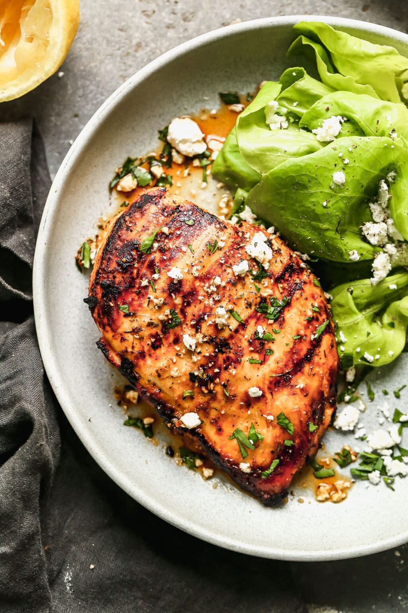

Grilled Chicken

Ingredients
- 1 3/4 pounds boneless, skinless chicken breasts about 3 medium breasts
- 1 batch best Chicken Marinade
- Chopped fresh herbs crumbled feta cheese, a squeeze of lemon juice, optional for serving
- Oil for grilling
Instructions
- Place the chicken breasts on a cutting board (leave several inches between them and work in batches as needed). Cover with plastic wrap to keep things tidy, and with a meat mallet, rolling pin, or your fist, pound the chicken to an even thickness. It doesn't need to be ultra thin—just make sure the middle is fairly even with the ends (the chicken should be about 1/2-inch thick).
- When ready to grill, preheat the grill to high (475 degrees F). If your chicken has been in the refrigerator, remove it and allow it to come to room temperature for at least 10 minutes. Clean and oil the grates.
- Place the chicken on the grill presentation (smooth) side down, shaking off any excess marinade. Cover the grill and let cook for 4 to 5 minutes on the first side, then flip. The chicken should lift easily off the grill; if it sticks, allow it to cook another minute or two.
- Recover the grill and cook for an additional 4 to 8 minutes. Chicken is considered done at 165 degrees F. I like to remove chicken from the grill around the 155-160 degree F mark and allow it to finish cooking while resting. DO NOT OVERCOOK, or your chicken will be dry.
- Place the chicken on a plate and let rest for at least 5 minutes (resting is mandatory!). Add any desired toppings or sauces. Enjoy!
Return to recipe list